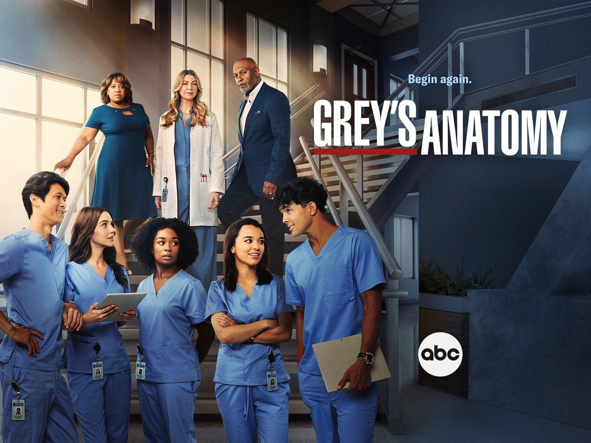
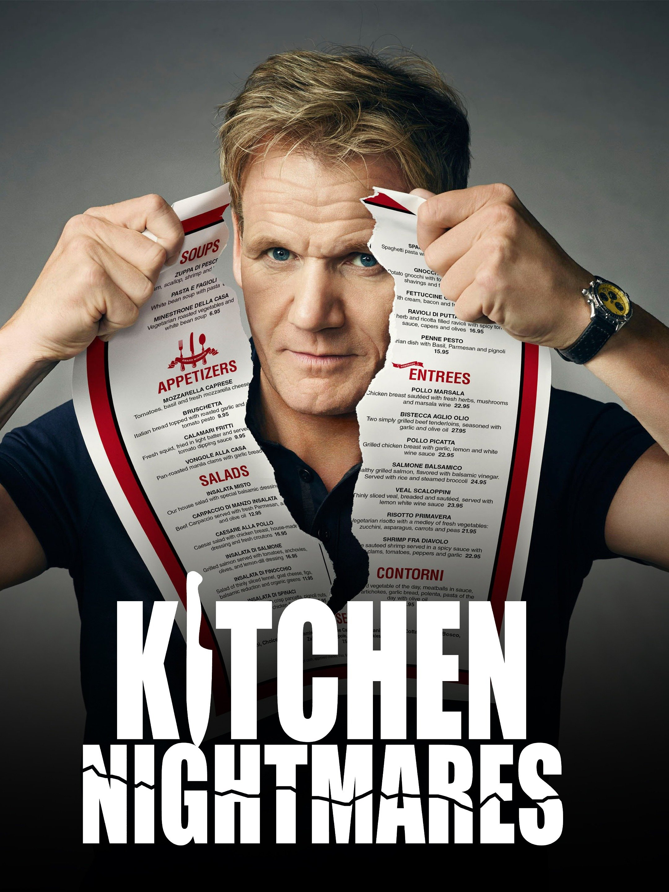
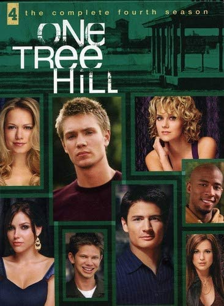

Twelve-year-old Finn battles evil in the Land of Ooo. Assisted by his magical dog, Jake,
Finn roams the Land of Ooo righting wrongs and battling evil. Usually that evil comes in the form of the Ice King,
who is in search of a wife.
The first season is about a haunted house and the family that has moved into it.
The second season centers around an insane asylum and a man who is wrongly accused of murdering several women,
including his wife.
It follows a group of criminal profilers who work for the FBI as members of its Behavioral Analysis Unit (BAU),
using behavioral analysis and profiling to investigate crimes and find the unsub (unknown subject),
the team's term for perpetrators.
A group of ambitious misfits try to escape the harsh realities of high school by joining a glee club
headed by a passionate Spanish teacher. When high school Spanish teacher Will Schuester (Matthew Morrison)
becomes the director of the school's failing Glee club, New Directions, he hopes to be able to rejuvenate it.

A medical based drama centered around Meredith Grey, an aspiring surgeon and daughter of one of the best surgeons,
Dr. Ellis Grey. Throughout the series, Meredith goes through professional and personal challenges along with
fellow surgeons at Seattle Grace Hospital.

The series follows the adventures of Ted Mosby (played by Josh Radnor) and his love life as a single man.
His stories are narrated by Bob Saget as Ted Mosby 25 years later as he tells them to his adolescent children.

Kitchen Nightmares is an American reality television series formerly broadcast on the Fox network,
in which chef Gordon Ramsay is invited by the owners to spend a week with a failing restaurant
in an attempt to revive the business.

The show is set in the fictional town of Tree Hill in North Carolina and initially follows
the lives of two half-brothers, Lucas Scott (Chad Michael Murray) and Nathan Scott (James Lafferty),
who compete for positions on their school's basketball team, and the drama that ensues from the brothers' romances.
Animated primetime series that follows the exploits of a hapless and semi-dysfunctional nuclear
family named the Simpsons, who live in the fictional town of Springfield, whose various inhabitants
add to the comedy, angst, satire, and parody of this series. The Simpsons are a dysfunctional family living in Springfield.